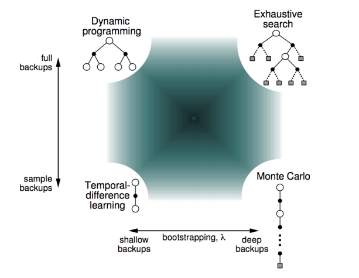
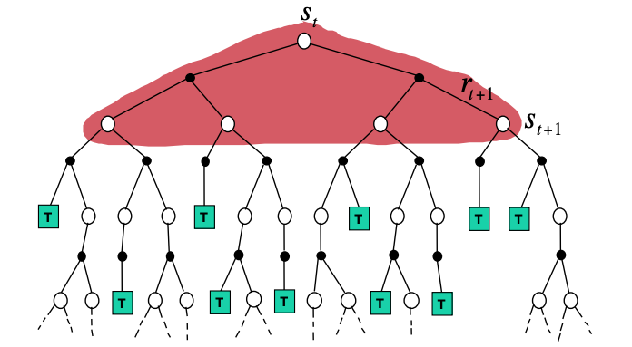
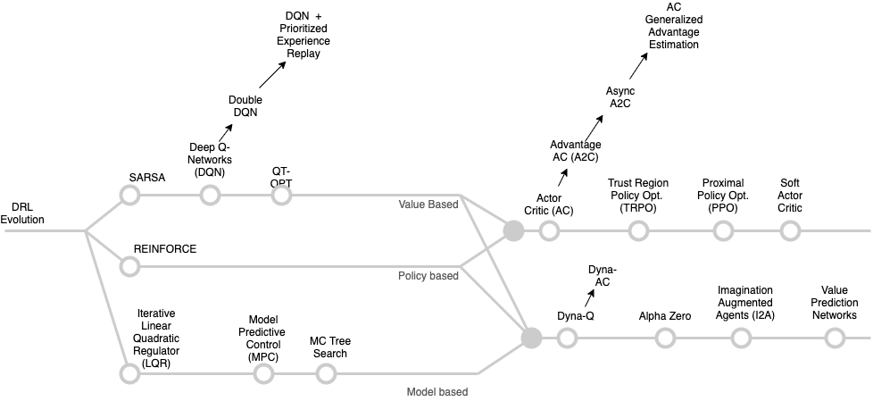

Reinforcement Learning
Contents
Reinforcement Learning¶
 Different Approaches to solve known and unknown MDPs
We started looking at different agent behavior architectures starting from the planning agents where the model of the environment is known and with no interaction with it the agent improves its policy, using this model as well as problem solving and logical reasoning skills.
We then looked at agents that can plan by interacting with the environment still knowing the model - this was covered in the MDP chapter. We have seen that DP uses full width backups. For example, in the tree representation of the value iteration algorithm shown below:
 Backup tree with the DP value iteration algorithm
every successor state and action is considered and evaluated using the known transition (environment dynamics) and reward functions. This can be dealt with for moderate size problems but even a single backup cant be feasible when we have very large state spaces. So we definitely need to develop approaches that allow agents to
optimally act in very large known MDPs or
optimally act when we don’t know the MDP functions.
In this chapter we outline prediction and control methods that are basic building blocks behind both cases.
We develop agents that can act in an initially unknown environment and learn via their interactions with it, gradually improving their policy. In the reinforcement learning problem setting, agents do not know essential elements of the MDP \(\mathcal M = <\mathcal S, \mathcal P, \mathcal R, \mathcal A, \gamma>\) that were assumed as given in fully observed MDP. This includes the transition function, \(P^a_{ss^\prime}\) and the reward function \(\mathcal R_s^a\) that are essential as we have seen previously to estimate the value function and optimize the policy.
The only way an agent can get information about these missing functions is through its experiences (states, actions, and rewards) in the environment—that is, the sequences of tuples (\(S_t, A_t, R_{t+1}\)).
Provided that it can learn such functions, RL can be posed as an MDP and many concepts we have already covered in the MDP chapter still apply.
To scale to large problems however, we also need to develop approaches that can learn such functions efficiently both in terms of computation and space (memory). We will use DNNs to provide, in the form of approximations, the needed efficiency boost.
 Deep RL (DRL) principle - we will cover it in the SARSA section.
Deep RL (DRL) principle - we will cover it in the SARSA section.
Suffice to say that exploring DRL algorithms is a very long journey as shown below - we will cover only two key algorithms, REINFORCE and SARSA that can be used as design patterns for the others. These algorithms were not invented in vacuum though. The reader must appreciate that these algorithms are instantiations of the so called model-free prediction and model-free control approaches to solving either unknown MDP problems or known MDP problems that are too large to apply the methods outlined in the MDP chapter.
 DRL algorithms - taxonomy and evolution
References¶
Spinning Up in Deep RL. This is a must read for all computer scientists that are getting started in the DRL practice.
Foundations of Deep RL. Similar to the Open AI’s spinning up, this is a practice oriented book.